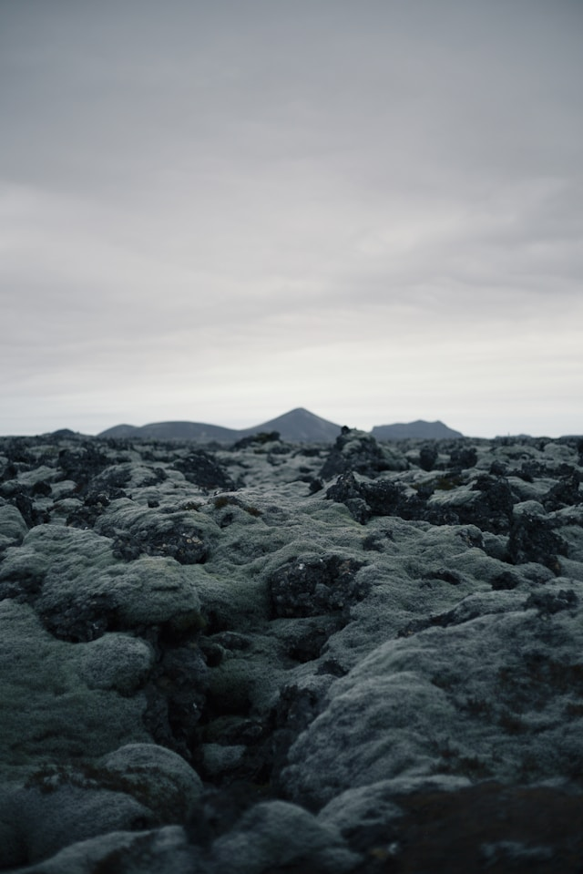

Rocas
Extrusivas
Rocas Volcanicas Extrusivas

Las rocas extrusivas, también conocidas como rocas volcánicas, son un
tipo de roca ígnea que se forma cuando el magma se enfría y solidifica
rápidamente en la superficie de la Tierra o cerca de ella. Estas rocas
tienen una serie de características distintivas y una gran variedad de
tipos, cada uno con propiedades y orígenes específicos. A continuación
se presenta una descripción detallada de las rocas extrusivas en una
extensión de 10 carillas.
Introducción a las rocas extrusivas
Las rocas ígneas se dividen en dos grandes categorías según el lugar
donde se solidifica el magma: las rocas intrusivas (o plutónicas) y
las rocas extrusivas (o volcánicas). Las rocas extrusivas se forman
cuando el magma asciende a la superficie de la Tierra, generalmente
a través de una erupción volcánica, y se enfría rápidamente. Este
rápido enfriamiento no permite que los cristales crezcan mucho,
resultando en una textura generalmente fina o vítrea.
Ejemplos: Basalto - Erupciones explosivas - Andesita - Riolita -
Obsidiana - Pumita - Escoria.
Formación y proceso de enfriamiento
El proceso de formación de las rocas extrusivas comienza en el manto
terrestre, donde el calor y la presión funden las rocas existentes,
creando magma. Este magma asciende debido a su menor densidad en
comparación con las rocas sólidas circundantes. Al alcanzar la
superficie, el magma se enfría rápidamente por contacto con el aire
o el agua, solidificándose en rocas. La rapidez del enfriamiento
influye en la textura y composición de las rocas resultantes.
Estudio y monitoreo
El estudio de las rocas extrusivas y la actividad volcánica es
crucial para la geología y la gestión de riesgos. Los geólogos
utilizan diversas técnicas para monitorear volcanes, como la
sismología, la geodesia y la teledetección. La comprensión de las
rocas extrusivas también ayuda a reconstruir la historia geológica
de la Tierra y a predecir futuras erupciones.
Diferencias entre Rocas Intrusivas y Rocas Sedimentarias
- Origen:
- Rocas Intrusivas: Se forman a partir del enfriamiento y solidificación del magma dentro de la corteza terrestre.
- Rocas Sedimentarias: Se forman por la acumulación y compactación de sedimentos, que pueden ser fragmentos de otras rocas, minerales o restos orgánicos.
- Ubicación de Formación:
- Rocas Intrusivas: Se forman en el interior de la Tierra.
- Rocas Sedimentarias: Se forman principalmente en la superficie terrestre, a menudo en ambientes acuáticos.
- Textura:
- Rocas Intrusivas: Generalmente tienen una textura granular, con cristales grandes visibles a simple vista debido al lento enfriamiento del magma.
- Rocas Sedimentarias: Pueden tener una variedad de texturas, desde grano fino hasta grueso, y a menudo presentan estratificación.
- Ejemplos Comunes:
- Rocas Intrusivas: Granito, diorita, gabro.
- Rocas Sedimentarias: Caliza, arenisca, lutita.
- Composición:
- Rocas Intrusivas: Compuestas principalmente de minerales silicatados como feldespatos, cuarzo y micas.
- Rocas Sedimentarias: Pueden estar compuestas de fragmentos de otras rocas, minerales precipitados de soluciones, y restos orgánicos.
- Proceso de Formación:
- Rocas Intrusivas: Proceso ígneo (enfriamiento y solidificación del magma).
- Rocas Sedimentarias: Procesos sedimentarios como la meteorización, erosión, transporte, deposición y diagénesis.
- Presencia de Fósiles:
- Rocas Intrusivas: Generalmente no contienen fósiles.
- Rocas Sedimentarias: Pueden contener fósiles debido a la acumulación de restos orgánicos.